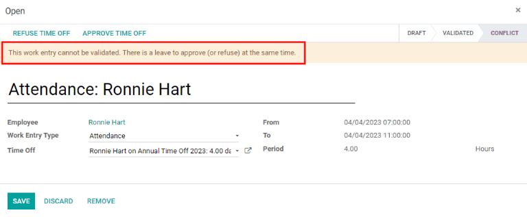

Work entries¶
The Work Entries dashboard, which can be found by going to , provides a visual overview of the individual time sheets of every employee, with each day split into a morning shift and an afternoon shift.

To change the view so that only the entries for a single day, week, or month are shown, click on one of the corresponding links for Day, Week, or Month, located at the top of the dashboard.
Use the ⬅️ (left arrow) and ➡️ (right arrow) icons on the left and right side of the Today button to adjust the displayed dates. The arrows will adjust the date based on the type of time selected. For example, if month is selected, the arrows will move one month with each click of the arrow. If week or day is selected, the time will move by either a week or a day for each click of the arrow, respectively.
Adding a new work entry¶
If a work entry is missing and needs to be added, such as sick time or time off, click Add to create a new work entry. A pop-up will appear, with several fields to fill in.
Enter the Work Entry Name, such as Sick Time or any other short description. Select
the Employee and the Work Entry Type from the respective drop-down lists.

Next, enter the date and time for the work entry in the From and To drop-downs. First, select the date by navigating to the correct month and year using the ⬅️ (left arrow) and ➡️ (right arrow) icons, then click on the specific day.
Then, select the time by clicking on the ⏰ (clock) icon, and using the ⬆️ (up arrow) and ⬇️ (down arrow) icons for each section to enter the hour, minute, and second for the time period.
The Period will display the hours based on the To and From entries.
Tip
Before clicking either Save & Close or Save & New, it is good to double check the Period to ensure the time stated corresponds to the To and From fields.

Once the information is entered, click Save & Close to save the entry and close the pop-up, or Save & New to save the entry and create another Work Entry Type.
Regenerate work entries¶
After a work entry has been either added or modified, the work entries need to be regenerated for the affected employee(s). Click on the Regenerate Work Entries button at the top of the main dashboard, and a pop-up will appear.
Select the Employee to regenerate work entries for from the drop-down menu, and adjust the From and To fields so the correct date range is displayed. Click the Regenerate Work Entries button and the work entries will be recreated. Once finished, the pop-up will close.

Conflicts¶
A conflict appears for any request that has not been approved, such as sick time or vacation, or if there are any errors on the work entry, such as required fields being left blank. Conflicts are required to be resolved before payslips can be generated.
Any work entry that has a conflict to be resolved is indicated on the main Work Entry overview dashboard, located by going to , where only conflicts needing resolution are shown.

Conflicts are indicated with an orange triangle in the top left corner of each individual entry. Click on an individual work entry to see the conflict details in a pop-up.
The conflict is briefly explained in an orange text box.
The Work Entry Name, Employee, and Work Entry Type are listed on the left side of the pop-up. The From and To date range, as well as the total time requested (in hours), appear in the Period field on the right side.
If there is a conflict because a time-off request for the same time already exists in the system, the time-off will be entered in the Time Off field. Clicking the External Link button next to the Time Off entry will bring up the duplicate time-off request.
The details for the time-off request appear in the pop-up. The request can be modified if needed. Click either the Validate or Refuse button to approve or deny the request, then click the Save button to save the changes.
Once the duplicate time-off request has been approved and saved, the screen goes back to the conflict. Click Refuse Time Off or Approve Time Off via the buttons in the top right to either approve or deny the request. Repeat for all conflicts until there are no conflicts to resolve.
After conflicts have been resolved, work entries must be regenerated for each employee by clicking the Regenerate Work Entries button, and entering the corresponding information for each employee.
Generating payslips¶
To generate payslips, navigate to the time period the payslips should be generated for, either day, week, or month. When the desired pay period is displayed, click the Generate Payslips button.

Tip
If the Generate Payslips button is not active (appears light turquoise instead of dark turquoise), that indicates there are conflicts. Solve conflicts first will appear as a warning when Generate Payslips is moused over. Resolve all conflicts before generating payslips.
A batch entry will appear for the time period selected. The batch name appears at the top in the Name field, typically listing the month and year for the particular batch.
The date range the payslips apply to appears in the Period field. The company appears in the Company field, along with an option to mark the payslips as a credit note. To make changes, click the Edit button in the top left, make any changes, then click either Save to accept the changes or Discard to revert to the original data.

Click the Create Draft Entry button to create the payslips for the batch.
Click on the Payslips button in the top right to view all the payslips for the batch.
Note
Payslips will have a status of Waiting until the Create Draft Entry button has been clicked. After, the payslip status will change to Done.
Payslips can be printed by clicking the box next to each payslip to print, or clicking the box next to Reference to select all the payslips at once. Click the Print button, and a PDF file will be created with all the specified payslips.

See also